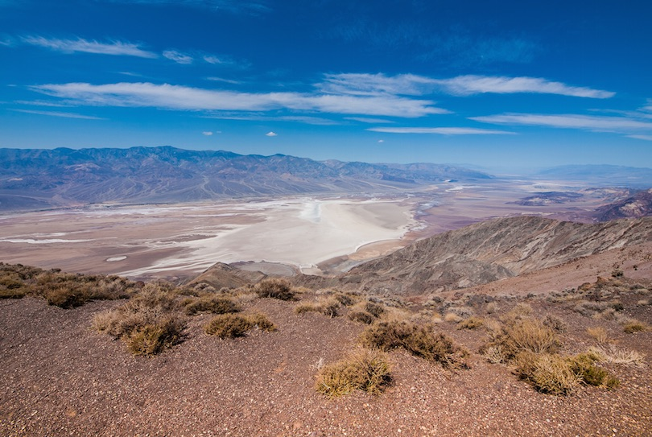

The Redwood National Park is much more than tall trees. In this vast parkland of woodlands, rivers and miles of spectacular coastline, visitors can enjoy a wide range of fun outdoor activities. There are several interesting exhibits, guided walks and nature programs on offer at the various visitor centers. Activities include horse riding and mountain biking along well-maintained trails, fishing for salmon and rainbow trout and kayaking down the trickling rivers. Scenic routes through the forest allow visitors to admire the amazing redwood trees, wildlife and waterfalls while a drive along the coastline offers breathtaking views of the ocean and glimpses of gray whales and seabirds.
2. SeaWorld San Diego
Situated in sunny San Diego, SeaWorld is characterized by its theme of marine mammals, daring rides and live shows. Through shows, displays and enclosures people can learn about the world’s oceans and the creatures that inhabit them such as dolphins, killer whales, walruses, penguins and Polar bears. Rides include a flume roller coaster, rafting through the Shipwreck Rapids and a simulated helicopter ride to experience the Wild Arctic. The main attraction however is the Shamu Show, which involves dancing fountains and talented performances by killer whales.
3. General Sherman
Victoria’s Inner Harbour on Vancouver Island is a cool place to visit. There’s the water on one side and stately government buildings on the other since Victoria is the capital of British Columbia. The city hosts a classic boat festival on Labour Day in September, with the harbor filling up with wooden boats. Visitors can also navigate the harbor on kayaks or tour boats. Take time out to have a traditional British tea at the Empress Hotel, a Victoria landmark since the early 1900s; it’s right across from the harbor.
4. Venice Beach
Venice Beach is one of Los Angeles, most popular beaches. The sandy three-mile beach here is just one of the attractions. During the summer season and on weekends, the Ocean Front Walk fills up with street performers and people just doing their thing: biking, rollerskating, swimming, sunbathing, and people watching. Muscle Beach is a special area where fanatic bodybuilders pump iron in a public show of strength.
5. Dante's View - Death Valley

Set high on top of the Black Mountains, Dante’s View is a terrace that offers stunning views of Death Valley. This unique valley is home to the lowest point in North America, Badwater Basin, as well as to the hottest and driest areas in North America. How hot is Death Valley? Well, temperatures in Death Valley’s Furnace Creek once reached a sizzling 134 degrees °F (57 °C). Because temperatures can be so extreme in Death Valley, travelers are advised visit Dante’s View early in the morning, especially during the hottest months of the year.Travelers who visit Dante’s View on a clear day may be able to see Badwater Basin, the lowest point in the contiguous United States, and Mt. Whitney, the highest point.
6. Disneyland
Located in Anaheim, Disneyland is a world-famous amusement park where Walt Disney movies and characters all come to life in a magical, make-believe kingdom. Featuring thrilling rides, roller coasters, dazzling shows and colorful districts packed with restaurants and shops, Disneyland offers adventure for the whole family. In themed neighborhoods like Main Street, USA, visitors can step back into the early 1900s, visit Tarzan’s Treehouse in Adventureland or meet Disney characters like Mickey Mouse, Goofy and Donald Duck in Mickey’s Toontown.
7. Big Sur Coastline
Stretching about 90 miles along the Central Coast of California is one of the most scenic driving routes in the world. Known as Big Sur, this stunning coastline covers an area between Carmel and the foothills of the Santa Lucia Mountains. Most of the 3 million drivers who visit Big Sur every year travel the popular Highway 1 to admire and photograph some of the country’s most dramatic scenery. Attractions along the route include the historic 40-foot Point Sur Lighthouse, Bixby Bridge, which is one of the world’s tallest single-span bridges, and the splendid, 80-foot McWay Falls plunge directly into the ocean.
8. Lake Tahoe
Created about 2 million years ago during the Ice Age, Lake Tahoe is one of the largest lakes in the world. The lake is located along the border between California and Nevada. Surrounded by majestic mountains, this popular tourist attraction offers exciting events and activities all year around. In the winter, the main activities are snow skiing, snowmobile riding, snow-tubing and snowshoeing at one of the ski resorts. From spring to fall, visitors can enjoy a host of water sports and other activities like sailing, kayaking, jet skiing, paddle boating and swimming.
9. Golden Gate Bridge
The Golden Gate Bridge near San Francisco is one of the most visited tourist attractions in California and the US. Spanning over the San Francisco Bay for more than a mile, this famous landmark is one of the world’s most photographed bridges. The famous red-orange color of the bridge was specifically chosen to make the bridge more easily visible through the thick fog that frequently shrouds the bridge. The splendor of this bridge can be experienced by driving, walking, cycling or participating in a walking tour to learn about the rich history of the bridge.
10. Tunnel View - Yosemite National Park
Located in Yosemite National Park in the Sierra Nevada Mountains of central eastern California, Tunnel View is an overlook where visitors can enjoy amazing views of El Capital, Bridalveil Falls, Half Dome and the gorgeous Yosemite Valley. The overlook, which was first built in 1993, was renovated in 2008. Tunnel View is very popular with park visitors, and it attracts between 5,000 and 7,000 visitors a day during the tourist high season. Travelers can find Tunnel View at the east end of the Wawona Tunnel off of Wawona Road.